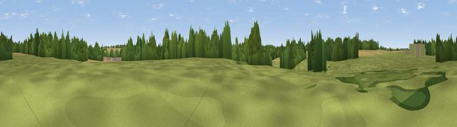

Fireball Hill
#45252 in England · top 75% of its area beats it · near QuendonThe view, rendered

A 360° render of this exact spot computed from the terrain model, tree cover and land cover — summer colours, afternoon light, calibrated against photographs of famous viewpoints. Real trees, hedges and buildings will differ in detail.
The panorama
Grey silhouette: terrain skyline in each direction (720 bearings, Earth curvature and refraction included). Dashed green: skyline with trees (+15 m) and buildings (+8 m) as obstacles. Blue strip: how far the ground is visible on each bearing.
Where the view opens
Wedge length = distance to the farthest visible ground on that bearing (vegetation-aware). Rings at 10, 25 and 50 km.
What fills the view
40% grassland · 38% cropland · 21% woodland · 1% built-up
Angular shares of the visible panorama (visual magnitude), not map area. Landscape diversity 0.49 (0–1 Shannon).
Key numbers
More beautiful places nearby
The staircase of upgrades: each row has a higher view potential than everything closer. Driving times are estimates from straight-line distance, calibrated against real road routing — check an actual route before setting out.
| Place | Direction | Drive | Score |
|---|---|---|---|
| Lovecotes Hill | ESE · 4 km | ~10 min | 23.8 |
| Viewpoint near Littlebury | N · 7 km | ~14 min | 26.0 |
| Heavy Hill | N · 9 km | ~18 min | 29.2 |
| Viewpoint near Ickleton | N · 11 km | ~21 min | 33.0 |
| Viewpoint near Heydon | NW · 12 km | ~23 min | 50.0 |
| Viewpoint near Royston | WNW · 20 km | ~33 min | 56.6 |
| Viewpoint near Hexton | W · 39 km | ~58 min | 65.4 |
| Viewpoint near Church End | W · 52 km | ~73 min | 65.8 |
51.96121, 0.20669 · source: osm peak · position refined by local search. Computed location — check access rights before visiting.